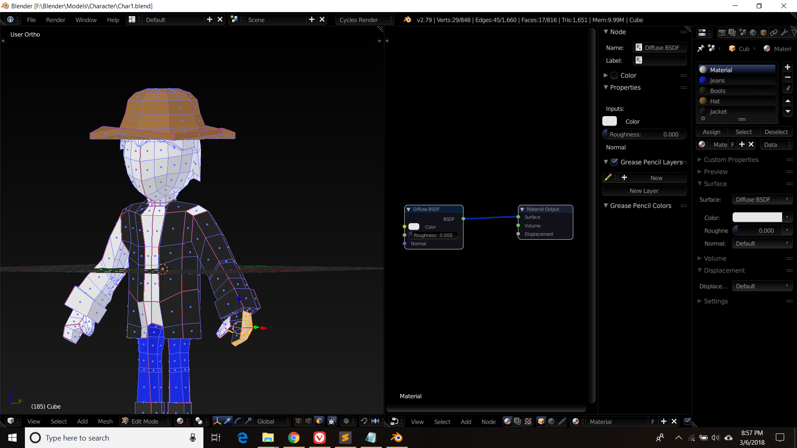

My First Character Attempt

This was my first attempt at creating a character. It was a cowboy with no name. The reference image that was being used was provided by the person who was teaching me this (Whose name i cant remember). The way he made it was by resizing shapes (mainly a cube) to fit the length and width of the character. While his method could have worked fine it would only work for low level renders and that would be it. Since i planned to use these character to animate one day this was not an ideal method for me to use for modelling a character.